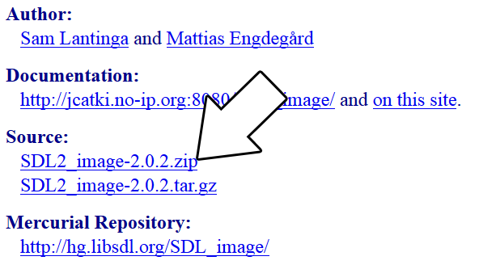

Setting up SDL_image on Mac Android Studio 3.0.1
Last Updated 9/29/17
1) First, download the SDL_image source on this page.
2) Download the demo source/assets. Copy the directory inside to "~/androidprojects/SDL_Tutorial/app/src/main/assets". Remember: if the application needs to load "53_extensions_and_changing_orientation/portrait.png" it needs to be at "~/androidprojects/SDL_Tutorial/app/src/main/assets/53_extensions_and_changing_orientation/portrait.png" when building.
3) Copy demo source to "~/androidprojects/SDL_Tutorial/app/src/main/jni/src/53_extensions_and_changing_orientation.cpp". Open the game make file at "~/androidprojects/SDL_Tutorial/app/src/main/jni/src/Android.mk" and change local source files to include the new demo source file:
4) SDL_image is just another shared object library that needs to be built along SDL2 and our C++ application. So that means we need to create a symbolic link to the SDL_image source code. Go to the JNI directory inside the project using this command:
5) There may be a symbolic link to SDL_image in the JNI folder but our demo application doesn't know where it is. To fix this error open up "~/androidprojects/SDL_Tutorial/app/src/main/jni/src/Android.mk" and change
7) You may have gotten a No rule to make target error for IMG_WIC.c. This is the webp library being a pain in the butt. We're just going to yank it out. Open up Open "~/androidlib/SDL2_image-2.0.2/Android.mk" and change:
8) The application should now build but IT WILL NOT WORK. We need to get our Java activity load the SDL extension library. Open "~/androidprojects/SDL_Tutorial/app/src/main/java/org/libsdl/app/SDLActivity.java" and look for this section:

Extract the source code so it's at "~/androidlib/SDL2_image-2.0.2"2) Download the demo source/assets. Copy the directory inside to "~/androidprojects/SDL_Tutorial/app/src/main/assets". Remember: if the application needs to load "53_extensions_and_changing_orientation/portrait.png" it needs to be at "~/androidprojects/SDL_Tutorial/app/src/main/assets/53_extensions_and_changing_orientation/portrait.png" when building.
3) Copy demo source to "~/androidprojects/SDL_Tutorial/app/src/main/jni/src/53_extensions_and_changing_orientation.cpp". Open the game make file at "~/androidprojects/SDL_Tutorial/app/src/main/jni/src/Android.mk" and change local source files to include the new demo source file:
LOCAL_SRC_FILES := $(SDL_PATH)/src/main/android/SDL_android_main.c \ 53_extensions_and_changing_orientation.cpp
Open up Android Studio and try to build. You'll get an error:fatal error: 'SDL_image.h' file not found
This error means that our game source file can't find SDL_image.h which makes sense since we haven't set it up yet.4) SDL_image is just another shared object library that needs to be built along SDL2 and our C++ application. So that means we need to create a symbolic link to the SDL_image source code. Go to the JNI directory inside the project using this command:
cd ~/androidprojects/SDL_Tutorial/app/src/main/jni
And create a symbolic link directory to the SDL2_image source directory we extracted (REMEMBER: This path will vary depending on your version of SDL_image):ln -s ~/androidlib/SDL2_image-2.0.2 SDL2_image
Build again, you'll get the same error but at least SDL2_image has a symbolic link in the project now.5) There may be a symbolic link to SDL_image in the JNI folder but our demo application doesn't know where it is. To fix this error open up "~/androidprojects/SDL_Tutorial/app/src/main/jni/src/Android.mk" and change
LOCAL_C_INCLUDES := $(LOCAL_PATH)/$(SDL_PATH)/include
toLOCAL_C_INCLUDES := $(LOCAL_PATH)/$(SDL_PATH)/include $(LOCAL_PATH)/../SDL2_image/
So now our demo application can find the SDL_image headers. Build again and you'll get a new error:Error:(120) undefined reference to `IMG_Load' Error:(432) undefined reference to `IMG_Init' Error:(477) undefined reference to `IMG_Quit'
6) Those last errors were linker errors. While SDL_image managed to compile and our game managed to compile, we didn't tell the NDK to link our game against SDL_image. In "~/androidprojects/SDL_Tutorial/app/src/main/jni/src/Android.mk" changeLOCAL_SHARED_LIBRARIES := SDL2
toLOCAL_SHARED_LIBRARIES := SDL2 SDL2_image
Build again. Hopefully you should get the application to build, but you may get an error.7) You may have gotten a No rule to make target error for IMG_WIC.c. This is the webp library being a pain in the butt. We're just going to yank it out. Open up Open "~/androidlib/SDL2_image-2.0.2/Android.mk" and change:
SUPPORT_WEBP ?= true
toSUPPORT_WEBP ?= false
Delete the line that saysIMG_WIC.c \
and just straight up delete the "~/androidlib/SDL2_image-2.0.2/external/libwebp-0.6.0" directory. Build again and you should get no errors.8) The application should now build but IT WILL NOT WORK. We need to get our Java activity load the SDL extension library. Open "~/androidprojects/SDL_Tutorial/app/src/main/java/org/libsdl/app/SDLActivity.java" and look for this section:
protected String[] getLibraries() {
return new String[] {
"SDL2",
// "SDL2_image",
// "SDL2_mixer",
// "SDL2_net",
// "SDL2_ttf",
"main"
};
}
Uncomment the libraries you'll be using so they'll be loaded.
9) Build and run. The application should run and rotate. Now that the application built, it's time to go over the source code.
9) Build and run. The application should run and rotate. Now that the application built, it's time to go over the source code.